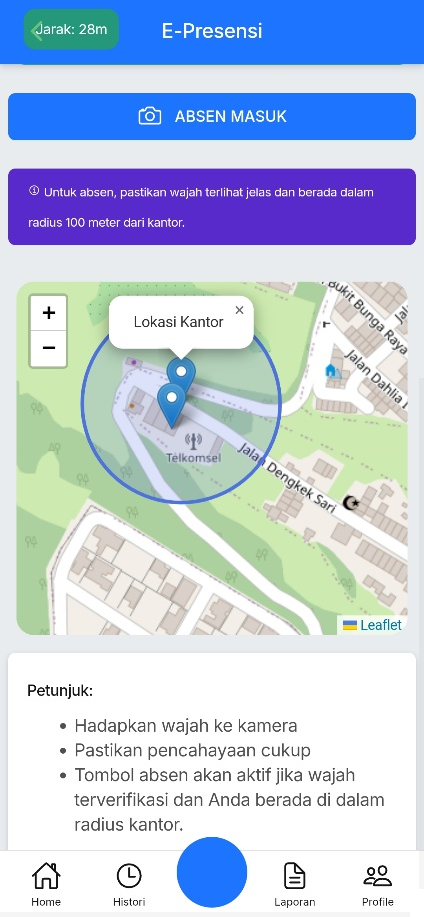
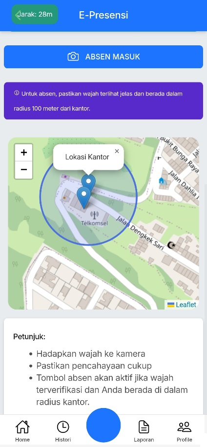

Ringkasan Proyek
[Siamalin adalah proyek tugas akhir saya, sebuah aplikasi web progresif (PWA) yang dirancang khusus untuk memodernisasi dan mendigitalkan operasional harian petugas keamanan di lingkungan universitas. Aplikasi ini berfokus pada peningkatan akuntabilitas, efisiensi pelaporan, dan pemantauan aktivitas patroli secara real-time. Dengan antarmuka yang mobile-first, petugas dapat dengan mudah mengakses semua fitur penting langsung dari smartphone mereka.]
Teknologi yang Digunakan
- Backend: PHP, Laravel Framework
- Database: MongoDB
- Frontend: Blade Template, JavaScript, Bootstrap 5
- Fitur Kunci: Face-api.js (untuk pengenalan wajah), Leaflet.js (untuk pemetaan GPS), DeepFace (Python) untuk service backend.
Fitur Utama (Aplikasi Mobile Petugas)
- Dashboard Petugas: Halaman utama yang menampilkan ringkasan presensi harian, menu navigasi utama, dan rekapitulasi kehadiran dalam sebulan.
- Absensi dengan Verifikasi Wajah: Petugas melakukan absensi masuk dan pulang dengan memindai wajah mereka. Sistem akan memvalidasi kecocokan wajah dan lokasi GPS untuk memastikan kehadiran yang sah di area tugas.
- Mulai & Lacak Patroli: Petugas dapat memulai sesi patroli, yang akan secara otomatis melacak rute pergerakan mereka menggunakan GPS. Aplikasi juga memberikan peringatan jika petugas keluar dari radius area kerja yang telah ditentukan.
- Histori Patroli & Presensi: Petugas dapat melihat riwayat patroli dan presensi mereka sebelumnya, lengkap dengan detail waktu, durasi, dan jejak rute di peta.
- Pelaporan Digital: Fitur untuk membuat dan mengirim laporan harian, kegiatan, atau insiden langsung dari lapangan. Laporan dapat dilengkapi dengan foto bukti yang diambil saat itu juga, serta verifikasi wajah pelapor.
- Manajemen Profil: Petugas dapat melihat dan memperbarui data profil mereka, termasuk nama, nomor HP, dan password.
Galeri Screenshot

Login
Dashboard Pengguna
 

Presensi Berbasis Wajah & Lokasi
Sistem Patroli Real-Time
Pelaporan Insiden & Kegiatan
Histori Presensi Bulanan